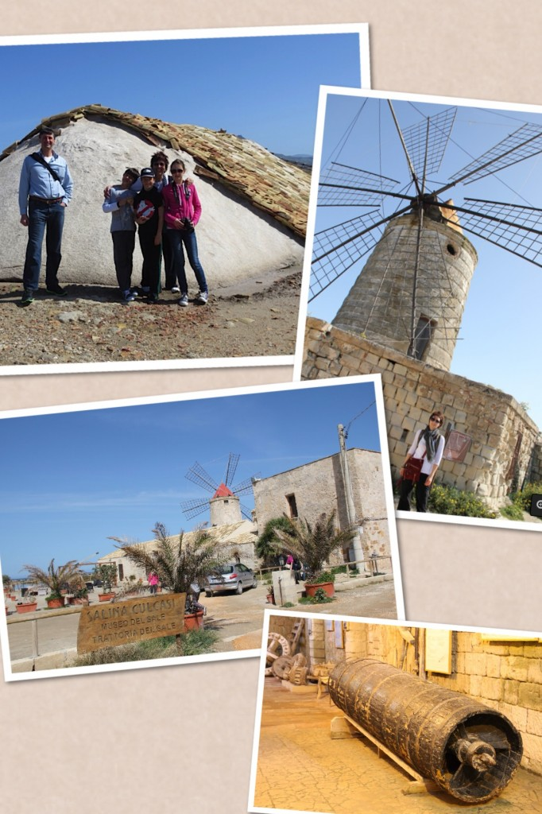
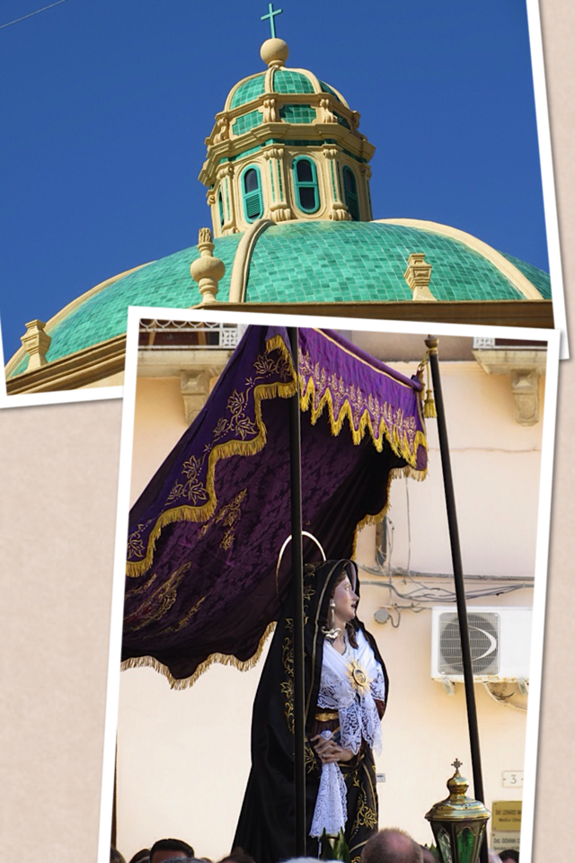
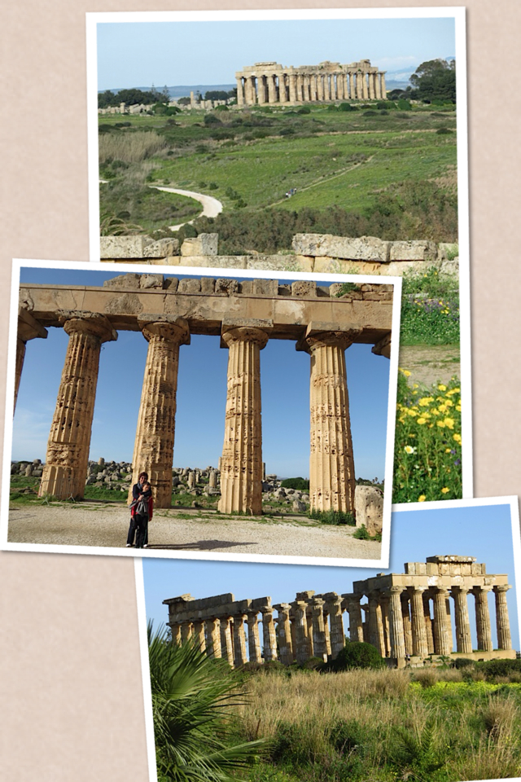

Saline of Trapani and the Museum of the Salina CulcasiIn the morning of the second day we took the Strada Statale 21 Trapani-Marsala, known as Strada delle Saline. The Saline are pools of seawater used to extract sea salt. The landscape is very fascinating: old windmills, piles of seas salt covered by terracotta tiles, and vast seawater pools of different depths. After visiting the museum we continued our trip toward Mozia.
Mozia is a small island famous for its archeological remains of Phoenician settlements. You can reach it by boat, which we didn't have the time to do, but at least I was hoping to see the antique road that, completely submerged by the sea in the 70's, used to connect Mozia to the mainland. Unfortunately that didn't happen: today you can only see it by boat. After a brief picnic, we drove through Marsala and were lucky enough to stumble upon an Easter procession.
The Dome of the Church of Porta Garibaldi in Marsala and the Easter procession Then our trip continued toward Selinunte, where we arrived while the sunset was starting to throw a fantastic golden light over the place. The peaceful, almost magical atmosphere of the site made a huge impact over us. Selinunte used to be a Greek city right by the sea. Today it is a vast archeological park offering many remains of antique temples and the only one standing can be seen from within (which is something that is forbidden in the other archeological sites).
Selinunte Selinunte was the last place we visited that day, so we started heading toward the B&B Baglio degli Angeli, in the outskirts of Agrigento. We arrived there when it was already dark, nevertheless we were warmly welcomed by Calogero, the owner, who helped us settle in and shared with us many useful information we used the following day.